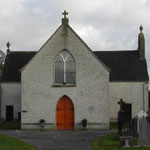
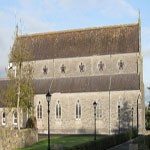
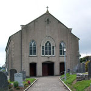
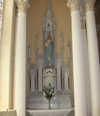
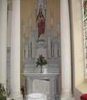

-
 Waterford's new Bridge
Waterford's new Bridge
The new bridge is the most modern landmark to be seen from around Templeorum village and surrounds .
Welcome To Templeorum Parish Co. Kilkenny
A message to our Parishioners during this difficult time for all of us.
We the Priests wish all of you good health of mind and body. We are praying for your safety and we assure you that we are there for you if you need us. I personally I am concerned for our 1st Friday parishioners, some of them have been without the Eucharist for some time. Should they want to receive Holy Communion we can arrange it for them; please ask your elderly loved ones if they would like to receive Holy Communion. For them it might be a bigger deal then you may think. Please look out for our parishioners living alone. It is very easy to feel alone and isolated during this lockdown. We wish all our parishioners to know they belong to the faith community and their spiritual physical and mental welfare is very much a priority which us. If you yourself feel isolated, feel free to contact us on 051 643112 or on 087 2408078. We are on the other end of the phone.
SERVICE of LIGHT 7.30pm this Wednesday Nov 11th
Month of the Holy Souls. This November we are praying for and remembering all our deceased loved ones. On Wednesday night the 11th of November a special service of light will take place in Piltown Church. You can join us at 7.30 p.m. on the webcam at templeorumparish.com. We will call out the names of all who died this year. Please contact us if you have lost a loved one this year and we will include them in our special service. When the lockdown is over we will organise masses for all the dead, over a few nights. This will happen even if it's in December and so we will have a special mass which you can attend when the opportunity arises.
Memorial Cross. We have a special sacred space on the side entrance to Piltown Church. It's a memorial cross for our deceased parishioners. Why not give it a visit. Leave a stone, which will be provided, to represent your loved one, at the foot of the cross; maybe drop into the church and light a candle for them or visit the grave and gain an indulgence for them.
A Prayer for those who have died. God of consolation, we remember those who have died: For those who passed away quietly, we ask for a joyful passage into your spacious heart. For those who suffered great pain, we ask for respite and the comfort of your compassionate embrace. For those who died too soon in sudden and unexpected ways, we ask for peace and surrender in your loving care. Grant all those who have died the grace of your eternal life and light. Amen.
Lockdown. I am asking you our Parishioners to join me outside Piltown Church at 5 p.m. on Wednesday November 18th to have a silent prayerful protest at the closure of our churches. Remember to keep social distancing! It's not just sad, it's a disgrace that our churches here are closed. It would seem that going to church is seen as “less important” by our Government. They view it as an optional recreation not as important or as essential as going to the hairdressers or gym, which was the case in Level 3. We are still on lockdown at level 5. The majority of European countries are still permitting public worship. Closing the churches may not mean much if one’s faith is weak or indifferent. But for people of faith this is a severe blow to their spiritual and mental welfare. They are deprived of a fundamental right and many are losing hope, feel isolated and alone. We are a community of believers and we sustain one another by coming together, praying, socialising and feeding on the Body of Christ. This is not an optional recreation or “less important”. It is a life-giving event for people who believe. The gospel is a road map and source of strength for getting through the Pandemic. Spiritual lives matter!
Thank you to all our volunteers who have don't Trojan work in ensuring our churches are spotless and dedication. We are indebted to you.
Thank you for October Stations; if they’ve been overlooked please drop them in to Parish Office, likewise with your weekly envelope offerings.
Fr. Paschal Moore P.P
9th November 2020
  